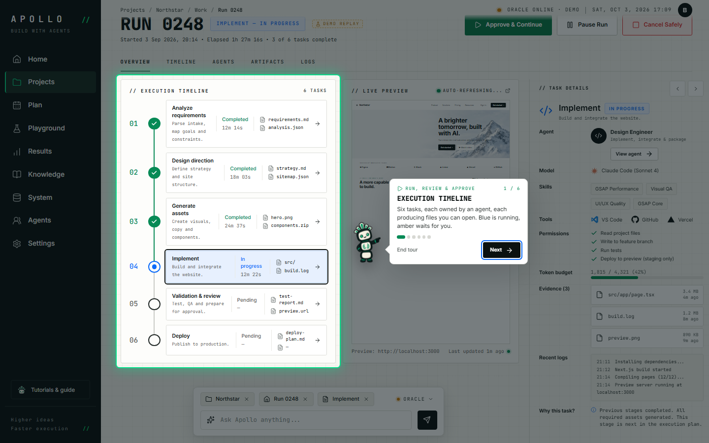
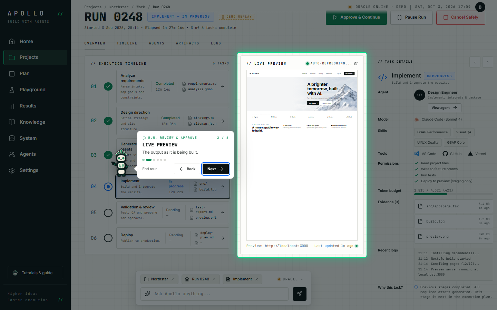
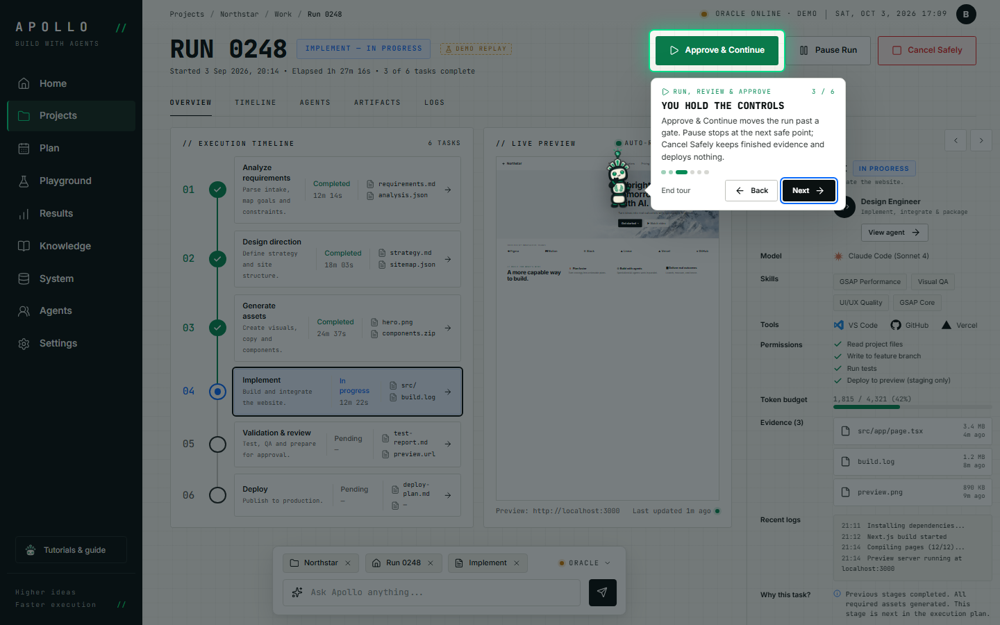
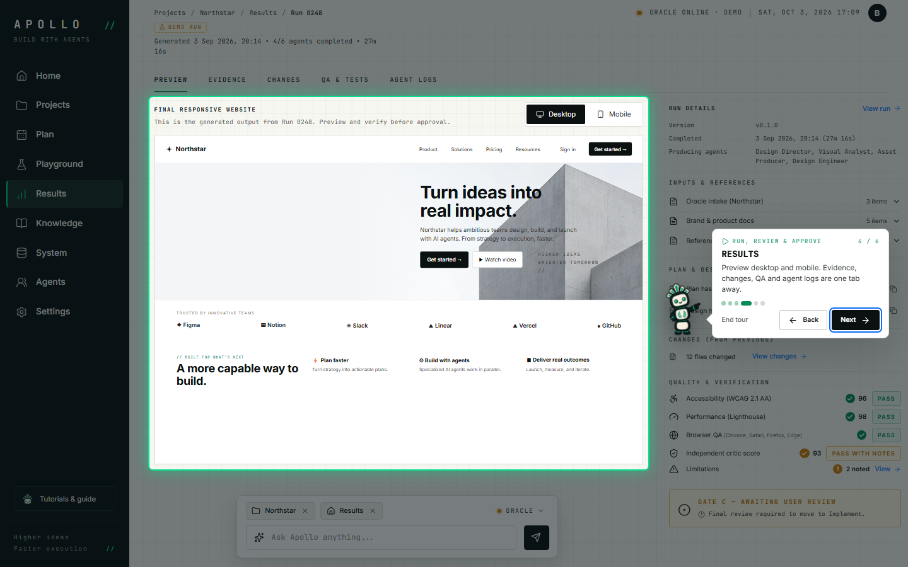
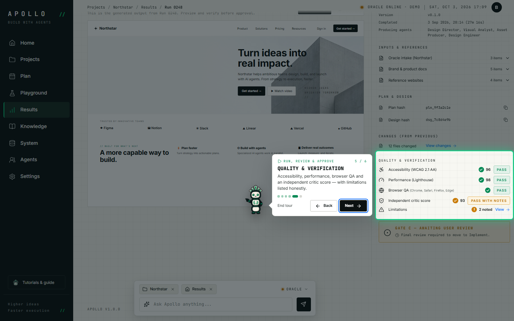
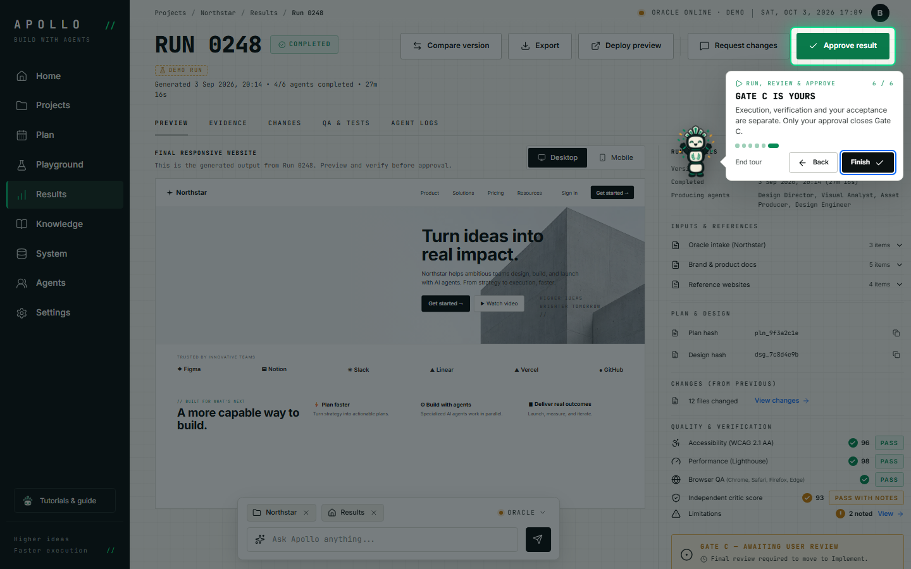

Recorded automatically with Playwright on a scratch copy of the data.
- 01

Execution timeline
Six tasks, each owned by an agent, each producing files you can open. Blue is running, amber waits for you.
Screen:
#/work/0248
- 02

Live preview
The output as it is being built.
Screen:
#/work/0248
- 03

You hold the controls
Approve & Continue moves the run past a gate. Pause stops at the next safe point; Cancel Safely keeps finished evidence and deploys nothing.
Screen:
#/work/0248
- 04
Results
Preview desktop and mobile. Evidence, changes, QA and agent logs are one tab away.
Screen:
#/results/0248
- 05
Quality & verification
Accessibility, performance, browser QA and an independent critic score — with limitations listed honestly.
Screen:
#/results/0248
- 06

Gate C is yours
Execution, verification and your acceptance are separate. Only your approval closes Gate C.
Screen:
#/results/0248